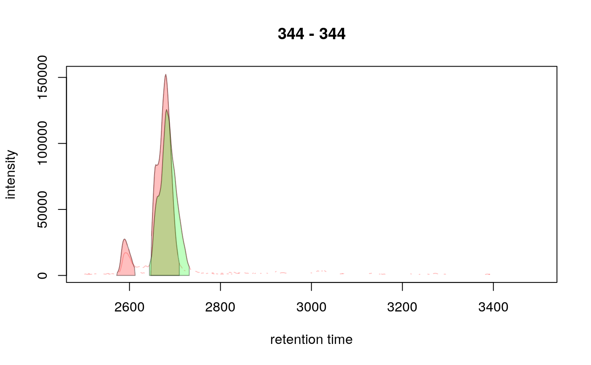
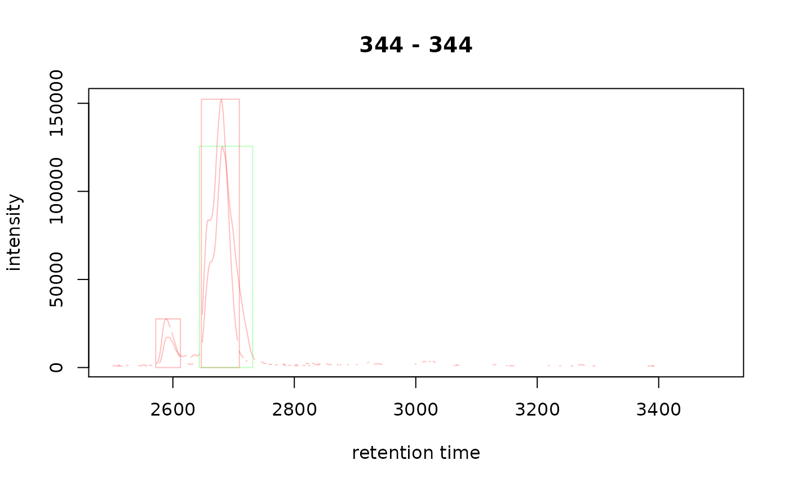
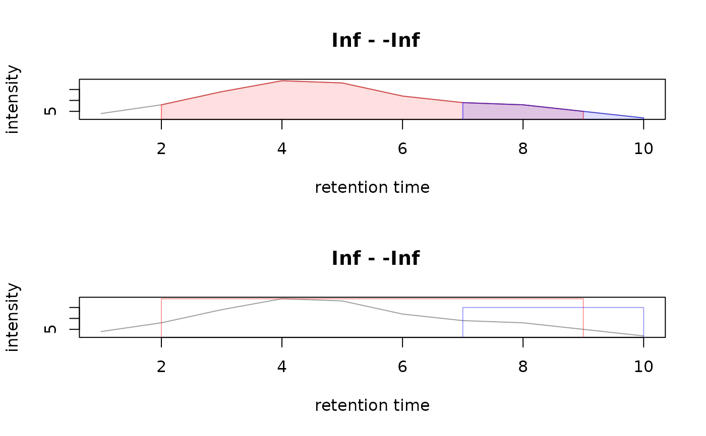

R/functions-XChromatograms.R, R/functions-XChromatogram.R, R/methods-XChromatogram.R, and 1 more
XChromatogram.RdThe XChromatogram object allows to store chromatographic data (e.g.
an extracted ion chromatogram) along with identified chromatographic peaks
within that data. The object inherits all functions from the Chromatogram()
object in the MSnbase package.
Multiple XChromatogram objects can be stored in a XChromatograms object.
This class extends MChromatograms() from the MSnbase package and allows
thus to arrange chromatograms in a matrix-like structure, columns
representing samples and rows m/z-retention time ranges.
All functions are described (grouped into topic-related sections) after the Arguments section.
XChromatograms(data, phenoData, featureData, chromPeaks, chromPeakData, ...)
XChromatogram(
rtime = numeric(),
intensity = numeric(),
mz = c(NA_real_, NA_real_),
filterMz = c(NA_real_, NA_real_),
precursorMz = c(NA_real_, NA_real_),
productMz = c(NA_real_, NA_real_),
fromFile = integer(),
aggregationFun = character(),
msLevel = 1L,
chromPeaks,
chromPeakData
)
# S4 method for XChromatogram
show(object)
# S4 method for XChromatogram
chromPeaks(
object,
rt = numeric(),
mz = numeric(),
ppm = 0,
type = c("any", "within", "apex_within"),
msLevel
)
# S4 method for XChromatogram
chromPeaks(object) <- value
# S4 method for XChromatogram,ANY
plot(
x,
col = "#00000060",
lty = 1,
type = "l",
xlab = "retention time",
ylab = "intensity",
main = NULL,
peakType = c("polygon", "point", "rectangle", "none"),
peakCol = "#00000060",
peakBg = "#00000020",
peakPch = 1,
...
)
# S4 method for XChromatogram
filterMz(object, mz, ...)
# S4 method for XChromatogram
filterRt(object, rt, ...)
# S4 method for XChromatogram
hasChromPeaks(object)
# S4 method for XChromatogram
dropFilledChromPeaks(object)
# S4 method for XChromatogram
chromPeakData(object)
# S4 method for XChromatogram
chromPeakData(object) <- value
# S4 method for XChromatogram,MergeNeighboringPeaksParam
refineChromPeaks(object, param = MergeNeighboringPeaksParam())
# S4 method for XChromatogram
filterChromPeaks(object, method = c("keepTop"), ...)
# S4 method for XChromatogram
transformIntensity(object, FUN = identity)
# S4 method for XChromatograms
show(object)
# S4 method for XChromatograms
hasChromPeaks(object)
# S4 method for XChromatograms
hasFilledChromPeaks(object)
# S4 method for XChromatograms
chromPeaks(
object,
rt = numeric(),
mz = numeric(),
ppm = 0,
type = c("any", "within", "apex_within"),
msLevel
)
# S4 method for XChromatograms
chromPeakData(object)
# S4 method for XChromatograms
filterMz(object, mz, ...)
# S4 method for XChromatograms
filterRt(object, rt, ...)
# S4 method for XChromatograms,ANY
plot(
x,
col = "#00000060",
lty = 1,
type = "l",
xlab = "retention time",
ylab = "intensity",
main = NULL,
peakType = c("polygon", "point", "rectangle", "none"),
peakCol = "#00000060",
peakBg = "#00000020",
peakPch = 1,
...
)
# S4 method for XChromatograms
processHistory(object, fileIndex, type)
# S4 method for XChromatograms
hasFeatures(object, ...)
# S4 method for XChromatograms
dropFeatureDefinitions(object, ...)
# S4 method for XChromatograms,PeakDensityParam
groupChromPeaks(object, param)
# S4 method for XChromatograms
featureDefinitions(
object,
mz = numeric(),
rt = numeric(),
ppm = 0,
type = c("any", "within", "apex_within")
)
# S4 method for XChromatograms,ANY,ANY,ANY
[(x, i, j, drop = TRUE)
# S4 method for XChromatograms
featureValues(
object,
method = c("medret", "maxint", "sum"),
value = "into",
intensity = "into",
missing = NA,
...
)
# S4 method for XChromatograms
plotChromPeakDensity(
object,
param,
col = "#00000060",
xlab = "retention time",
main = NULL,
peakType = c("polygon", "point", "rectangle", "none"),
peakCol = "#00000060",
peakBg = "#00000020",
peakPch = 1,
simulate = TRUE,
...
)
# S4 method for XChromatograms
dropFilledChromPeaks(object)
# S4 method for XChromatograms,MergeNeighboringPeaksParam
refineChromPeaks(object, param = MergeNeighboringPeaksParam())
# S4 method for XChromatograms
filterChromPeaks(object, method = c("keepTop"), ...)
# S4 method for XChromatograms
transformIntensity(object, FUN = identity)For XChromatograms: list of Chromatogram or
XChromatogram objects.
For XChromatograms: either a data.frame,
AnnotatedDataFrame or NAnnotatedDataFrame describing the
phenotypical information of the samples.
For XChromatograms: either a data.frame or
AnnotatedDataFrame with additional information for each row of
chromatograms.
For XChromatogram: matrix with required columns
"rt", "rtmin", "rtmax", "into", "maxo" and "sn".
For XChromatograms: list, same length than data, with the
chromatographic peaks for each chromatogram. Each element has to be
a matrix, the ordering has to match the order of the chromatograms
in data.
For XChromatogram: DataFrame with optional
additional annotations for each chromatographic peak. The number of rows
has to match the number of chromatographic peaks.
For filterChromPeaks: additional parameters defining how to
filter chromatographic peaks. See function description below for details.
For XChromatogram: numeric with the retention times
(length has to be equal to the length of intensity).
For XChromatogram: numeric with the intensity values
(length has to be equal to the length of rtime).
For `featureValues`: `character(1)` specifying the name
of the column in `chromPeaks(object)` containing the intensity value
of the peak that should be used for the `method = "maxint"` conflict
resolution if.For XChromatogram: numeric(2) representing the m/z value
range (min, max) on which the chromatogram was created. This is
supposed to contain the real range of m/z values in contrast
to the filterMz below.
For chromPeaks and featureDefinitions: numeric(2) defining the
m/z range for which chromatographic peaks or features should be returned.
For filterMz: numeric(2) defining the m/z range for which
chromatographic peaks should be retained.#'
For XChromatogram: numeric(2) representing the m/z
value range (min, max) that was used to filter the original object
on m/z dimension. If not applicable use filterMz = c(0, 0).
For XChromatogram: numeric(2) for SRM/MRM transitions.
Represents the mz of the precursor ion. See details for more information.
For XChromatogram: numeric(2) for SRM/MRM transitions.
Represents the mz of the product. See details for more information.
For XChromatogram: integer(1) the index of the file
within the OnDiskMSnExp or MSnExp object from which the chromatogram
was extracted.
For XChromatogram: character(1) specifying the
function that was used to aggregate intensity values for the same
retention time across the m/z range.
For XChromatogram: integer with the MS level from which
the chromatogram was extracted.
For chromPeaks and chromPeakData: extract chromatographic peaks of a
certain MS level.
An XChromatogram or XChromatograms object.
For chromPeaks and featureDefinitions: numeric(2) defining
the retention time range for which chromatographic peaks or features
should be returned.
For filterRt: numeric(2) defining the retention time range to
reduce object to.
For chromPeaks and featureDefinitions: numeric(1) defining
a ppm to expand the provided m/z range.
For chromPeaks and featureDefinitions: character(1)
defining which peaks or features to return if rt or mz is provided:
"any" (default) return all peaks that are even
partially overlapping with rt, "within" return peaks that are
completely within rt and "apex_within" return peaks which apex
is within rt.
For `plot`: what type of plot should be used for the
chromatogram (such as `"l"` for lines, `"p"` for points etc), see help
of [plot()] in the `graphics` package for more details.
For `processHistory`: restrict returned processing steps to specific
types. Use [processHistoryTypes()] to list all supported values.For chromPeaks<-: a numeric matrix with required columns
"rt", "rtmin", "rtmax", "into" and "maxo".
For `featureValues`: `character(1)` specifying the name of the column in
`chromPeaks(object)` that should be returned or `"index"` (default) to
return the index of the peak associated with the feature in each sample.
To return the integrated peak area instead of the index use
`value = "into"`.For plot: an XChromatogram or XChromatograms object.
For plot: the color to be used to draw the chromatogram.
For plot and plotChromPeakDensity: the line type.
For plot and plotChromPeakDensity: the x axis label.
For plot: the y axis label.
For plot and plotChromPeakDensity: an optional title for
the plot.
For plot and plotChromPeakDensity:
character(1) defining how (and if) identified chromatographic peak
within the chromatogram should be plotted. Options
are "polygon" (default): draw the peak borders with the peakCol color
and fill the peak area with the peakBg color, "point": indicate the
peak's apex with a point, "rectangle": draw a rectangle around the
identified peak and "none": don't draw peaks.
For plot and plotChromPeakDensity: the foreground color
for the peaks. For peakType = "polygon" and peakType = "rectangle"
this is the color for the border. Use NA to not use a foreground
color. This should either be a single color or a vector of colors with
the same length than chromPeaks(x) has rows.
For plot and plotChromPeakDensity: the background color
for the peaks. For peakType = "polygon" and peakType = "rectangle"
the peak are or rectangle will be filled with this color. Use NA to
skip. This should be either a single color or a vector of colors with
the same length than chromPeaks(x) has rows.
For plot and plotChromPeakDensity: the point character
to be used for peakType = "point". See plot() in the graphics
package for more details.
For groupChromPeaks and plotChromPeakDensity: a
PeakDensityParam() object with the settings for the peak density
correspondence analysis algorithm.
For featureValues: character(1) specifying the method to
resolve multi-peak mappings within the sample sample, i.e. to select
the representative peak for a feature for which more than one peak
was assigned in one sample. Options are "medret" (default): select the
peak closest to the median retention time of the feature, "maxint":
select the peak with the largest signal and "sum": sum the values
of all peaks (only if value is "into" or "maxo").
For filterChromPeaks: character(1) defining the method that should
be used to filter chromatographic peaks. See help on filterChromPeaks
below for details.
For transformIntensity: a function to transform the intensity
values of object.
For processHistory: optional integer specifying the
index of the files/samples for which the ProcessHistory objects should
be returned.
For [: integer with the row indices to subset the
XChromatograms object.
For [: integer with the column indices to subset the
XChromatograms object.
For [: logical(1) whether the dimensionality should be
dropped (if possible). Defaults to drop = TRUE, thus, if length of i
and j is 1 a XChromatogram is returned. Note that drop is ignored
if length of i or j is larger than 1, thus a XChromatograms is
returned.
For featureValues: how missing values should be reported.
Allowed values are NA (default), a numeric(1) to replace NAs with
that value or missing = "rowmin_half" to replace NAs with half
of the row's minimal (non-missing) value.
For plotChromPeakDensity: logical(1) whether a
correspondence analysis should be simulated based on the available
data and the provided PeakDensityParam() param argument. See
section Correspondence analysis for details.
See help of the individual functions.
Highlighting the peak area(s) in an XChromatogram or XChromatograms
object (plot with peakType = "polygon") draws a polygon representing
the displayed chromatogram from the peak's minimal retention time to the
maximal retention time. If the XChromatograms was extracted from an
XCMSnExp() object with the chromatogram() function this might not
represent the actual identified peak area if the m/z range that was
used to extract the chromatogram was larger than the peak's m/z.
Objects can be created with the contructor function XChromatogram and
XChromatograms, respectively. Also, they can be coerced from
Chromatogram or MChromatograms() objects using
as(object, "XChromatogram") or as(object, "XChromatograms").
Besides classical subsetting with [ specific filter operations on
MChromatograms() and XChromatograms objects are available. See
filterColumnsIntensityAbove() for more details.
[ allows to subset a XChromatograms object by row (i) and column
(j), with i and j being of type integer. The featureDefinitions
will also be subsetted accordingly and the peakidx column updated.
filterMz filters the chromatographic peaks within an XChromatogram or
XChromatograms, if a column "mz" is present in the chromPeaks matrix.
This would be the case if the XChromatogram was extracted from an
XCMSnExp() object with the chromatogram() function. All
chromatographic peaks with their m/z within the m/z range defined by mz
will be retained. Also feature definitions (if present) will be subset
accordingly. The function returns a filtered XChromatogram or
XChromatograms object.
filterRt filters chromatogram(s) by the provided retention time range.
All eventually present chromatographic peaks with their apex within the
retention time range specified with rt will be retained. Also feature
definitions, if present, will be filtered accordingly. The function
returns a filtered XChromatogram or XChromatograms object.
See also help of Chromatogram in the MSnbase package for general
information and data access. The methods listed here are specific for
XChromatogram and XChromatograms objects.
chromPeaks, chromPeaks<-: extract or set the matrix with the
chromatographic peak definitions. Parameter rt allows to specify a
retention time range for which peaks should be returned along with
parameter type that defines how overlapping is defined (parameter
description for details). For XChromatogram objects the function returns
a matrix with columns "rt" (retention time of the peak apex),
"rtmin" (the lower peak boundary), "rtmax" (the upper peak boundary),
"into" (the ingegrated peak signal/area of the peak), "maxo" (the
maximum instensity of the peak and "sn" (the signal to noise ratio).
Note that, depending on the peak detection algorithm, the matrix may
contain additional columns.
For XChromatograms objects the matrix contains also columns "row"
and "column" specifying in which chromatogram of object the peak was
identified. Chromatographic peaks are ordered by row.
chromPeakData, chromPeakData<-: extract or set the DataFrame() with
optional chromatographic peak annotations.
hasChromPeaks: infer whether a XChromatogram (or XChromatograms)
has chromatographic peaks. For XChromatogram: returns a logical(1),
for XChromatograms: returns a matrix, same dimensions than object
with either TRUE or FALSE if chromatographic peaks are available in
the chromatogram at the respective position.
hasFilledChromPeaks: whether a XChromatogram (or a XChromatogram in
a XChromatograms) has filled-in chromatographic peaks.
For XChromatogram: returns a logical(1),
for XChromatograms: returns a matrix, same dimensions than object
with either TRUE or FALSE if chromatographic peaks are available in
the chromatogram at the respective position.
dropFilledChromPeaks: removes filled-in chromatographic peaks. See
dropFilledChromPeaks() help for XCMSnExp() objects for more
information.
hasFeatures: for XChromatograms objects only: if correspondence
analysis has been performed and m/z-rt feature definitions are present.
Returns a logical(1).
dropFeatureDefinitions: for XChrmomatograms objects only: delete any
correspondence analysis results (and related process history).
featureDefinitions: for XChromatograms objects only. Extract the
results from the correspondence analysis (performed with
groupChromPeaks). Returns a DataFrame with the properties of the
defined m/z-rt features: their m/z and retention time range. Columns
peakidx and row contain the index of the chromatographic peaks in the
chromPeaks matrix associated with the feature and the row in the
XChromatograms object in which the feature was defined. Similar to the
chromPeaks method it is possible to filter the returned feature matrix
with the mz, rt and ppm parameters.
featureValues: for XChromatograms objects only. Extract the abundance
estimates for the individuals features. Note that by default (with
parameter value = "index" a matrix of indices of the peaks in the
chromPeaks matrix associated to the feature is returned. To extract the
integrated peak area use value = "into". The function returns a matrix
with one row per feature (in featureDefinitions) and each column being
a sample (i.e. column of object). For features without a peak associated
in a certain sample NA is returned. This can be changed with the
missing argument of the function.
filterChromPeaks: filters chromatographic peaks in object depending
on parameter method and method-specific parameters passed as additional
arguments with .... Available methods are:
method = "keepTop": keep top n (default n = 1L) peaks in each
chromatogram ordered by column order (defaults to order = "maxo").
Parameter decreasing (default decreasing = TRUE) can be used to
order peaks in descending (decreasing = TRUE) or ascending (
decreasing = FALSE) order to keep the top n peaks with largest or
smallest values, respectively.
processHistory: returns a list of ProcessHistory objects representing
the individual performed processing steps. Optional parameters type and
fileIndex allow to further specify which processing steps to return.
transformIntensity: transforms the intensity values of the chromatograms
with provided function FUN. See transformIntensity() in the MSnbase
package for details. For XChromatogram and XChromatograms in addition
to the intensity values also columns "into" and "maxo" in the object's
chromPeaks matrix are transformed by the same function.
plot draws the chromatogram and highlights in addition any
chromatographic peaks present in the XChromatogram or XChromatograms
(unless peakType = "none" was specified). To draw peaks in different
colors a vector of color definitions with length equal to
nrow(chromPeaks(x)) has to be submitted with peakCol and/or peakBg
defining one color for each peak (in the order as peaks are in
chromPeaks(x)). For base peak chromatograms or total ion chromatograms
it might be better to set peakType = "none" to avoid generating busy
plots.
plotChromPeakDensity: visualize peak density-based correspondence
analysis results. See section Correspondence analysis for more details.
See findChromPeaks-Chromatogram-CentWaveParam for information.
After chromatographic peak detection it is also possible to refine
identified chromatographic peaks with the refineChromPeaks method (e.g. to
reduce peak detection artifacts). Currently, only peak refinement using the
merge neighboring peaks method is available (see
MergeNeighboringPeaksParam() for a detailed description of the approach.
Identified chromatographic peaks in an XChromatograms object can be grouped
into features with the groupChromPeaks function. Currently, such a
correspondence analysis can be performed with the peak density method
(see groupChromPeaks for more details) specifying the algorithm settings
with a PeakDensityParam() object. A correspondence analysis is performed
separately for each row in the XChromatograms object grouping
chromatographic peaks across samples (columns).
The analysis results are stored in the returned XChromatograms object
and can be accessed with the featureDefinitions method which returns a
DataFrame with one row for each feature. Column "row" specifies in
which row of the XChromatograms object the feature was identified.
The plotChromPeakDensity method can be used to visualize peak density
correspondence results, or to simulate a peak density correspondence
analysis on chromatographic data. The resulting plot consists of two panels,
the upper panel showing the chromatographic data as well as the identified
chromatographic peaks, the lower panel the distribution of peaks (the peak
density) along the retention time axis. This plot shows each peak as a point
with it's peak's retention time on the x-axis, and the sample in which it
was found on the y-axis. The distribution of peaks along the retention time
axis is visualized with a density estimate. Grouped chromatographic peaks
are indicated with grey shaded rectangles. Parameter simulate allows to
define whether the correspondence analysis should be simulated (
simulate=TRUE, based on the available data and the provided
PeakDensityParam() parameter class) or not (simulate=FALSE). For the
latter it is assumed that a correspondence analysis has been performed with
the peak density method on the object.
See examples below.
Abundance estimates for each feature can be extracted with the
featureValues function using parameter value = "into" to extract the
integrated peak area for each feature. The result is a matrix, columns
being samples and rows features.
findChromPeaks-centWave for peak
detection on MChromatograms() objects.
## ---- Creation of XChromatograms ----
##
## Create a XChromatograms from Chromatogram objects
dta <- list(Chromatogram(rtime = 1:7, c(3, 4, 6, 12, 8, 3, 2)),
Chromatogram(1:10, c(4, 6, 3, 4, 7, 13, 43, 34, 23, 9)))
## Create an XChromatograms without peak data
xchrs <- XChromatograms(dta)
## Create an XChromatograms with peaks data
pks <- list(matrix(c(4, 2, 5, 30, 12, NA), nrow = 1,
dimnames = list(NULL, c("rt", "rtmin", "rtmax", "into", "maxo", "sn"))),
NULL)
xchrs <- XChromatograms(dta, chromPeaks = pks)
## Create an XChromatograms from XChromatogram objects
dta <- lapply(dta, as, "XChromatogram")
chromPeaks(dta[[1]]) <- pks[[1]]
xchrs <- XChromatograms(dta, nrow = 1)
hasChromPeaks(xchrs)
#> 1 2
#> 1 TRUE FALSE
## Loading a test data set with identified chromatographic peaks
faahko_sub <- loadXcmsData("faahko_sub2")
## Subset the dataset to the first and third file.
xod_sub <- filterFile(faahko_sub, file = c(1, 3))
od <- as(xod_sub, "MsExperiment")
## Extract chromatograms for a m/z - retention time slice
chrs <- chromatogram(od, mz = 344, rt = c(2500, 3500))
chrs
#> MChromatograms with 1 row and 2 columns
#> 1 2
#> <Chromatogram> <Chromatogram>
#> [1,] length: 639 length: 639
#> phenoData with 2 variables
#> featureData with 4 variables
## --------------------------------------------------- ##
## Chromatographic peak detection ##
## --------------------------------------------------- ##
## Perform peak detection using CentWave
xchrs <- findChromPeaks(chrs, param = CentWaveParam())
xchrs
#> XChromatograms with 1 row and 2 columns
#> 1 2
#> <XChromatogram> <XChromatogram>
#> [1,] peaks: 2 peaks: 1
#> phenoData with 2 variables
#> featureData with 4 variables
#> - - - xcms preprocessing - - -
#> Chromatographic peak detection:
#> method: centWave
## Do we have chromatographic peaks?
hasChromPeaks(xchrs)
#> 1 2
#> 1 TRUE TRUE
## Process history
processHistory(xchrs)
#> [[1]]
#> Object of class "XProcessHistory"
#> type: Peak detection
#> date: Fri May 5 07:05:08 2023
#> info:
#> fileIndex: 1,2
#> Parameter class: CentWaveParam
#>
## The chromatographic peaks, columns "row" and "column" provide information
## in which sample the peak was identified.
chromPeaks(xchrs)
#> rt rtmin rtmax into intb maxo sn row column
#> [1,] 2589.015 2571.801 2612.490 592297.3 554533.9 27600 14 1 1
#> [2,] 2679.783 2646.919 2709.517 5210015.9 5071346.6 152320 30 1 1
#> [3,] 2682.914 2643.790 2731.427 5255689.5 4983388.9 125632 28 1 2
## Spectifically extract chromatographic peaks for one sample/chromatogram
chromPeaks(xchrs[1, 2])
#> rt rtmin rtmax into intb maxo sn
#> [1,] 2682.914 2643.79 2731.427 5255689 4983389 125632 28
## Plot the results
plot(xchrs)
## Plot the results using a different color for each sample
sample_colors <- c("#ff000040", "#00ff0040", "#0000ff40")
cols <- sample_colors[chromPeaks(xchrs)[, "column"]]
plot(xchrs, col = sample_colors, peakBg = cols)

## Indicate the peaks with a rectangle
plot(xchrs, col = sample_colors, peakCol = cols, peakType = "rectangle",
peakBg = NA)

## --------------------------------------------------- ##
## Correspondence analysis ##
## --------------------------------------------------- ##
## Group chromatographic peaks across samples
prm <- PeakDensityParam(sampleGroup = rep(1, 2))
res <- groupChromPeaks(xchrs, param = prm)
hasFeatures(res)
#> [1] TRUE
featureDefinitions(res)
#> DataFrame with 2 rows and 10 columns
#> mzmed mzmin mzmax rtmed rtmin rtmax npeaks
#> <numeric> <numeric> <numeric> <numeric> <numeric> <numeric> <numeric>
#> FT1 NA NA NA 2681.35 2679.78 2682.91 2
#> FT2 NA NA NA 2589.01 2589.01 2589.01 1
#> X1 peakidx row
#> <numeric> <list> <integer>
#> FT1 2 2,3 1
#> FT2 1 1 1
## Plot the correspondence results. Use simulate = FALSE to show the
## actual results. Grouped chromatographic peaks are indicated with
## grey shaded rectangles.
plotChromPeakDensity(res, simulate = FALSE)
## Simulate a correspondence analysis based on different settings. Larger
## bw will increase the smoothing of the density estimate hence grouping
## chromatographic peaks that are more apart on the retention time axis.
prm <- PeakDensityParam(sampleGroup = rep(1, 3), bw = 60)
plotChromPeakDensity(res, param = prm)
## Delete the identified feature definitions
res <- dropFeatureDefinitions(res)
hasFeatures(res)
#> [1] FALSE
## Create a XChromatogram object
pks <- matrix(nrow = 1, ncol = 6)
colnames(pks) <- c("rt", "rtmin", "rtmax", "into", "maxo", "sn")
pks[, "rtmin"] <- 2
pks[, "rtmax"] <- 9
pks[, "rt"] <- 4
pks[, "maxo"] <- 19
pks[, "into"] <- 93
xchr <- XChromatogram(rtime = 1:10,
intensity = c(4, 8, 14, 19, 18, 12, 9, 8, 5, 2),
chromPeaks = pks)
xchr
#> Object of class: XChromatogram
#> length of object: 10
#> from file:
#> mz range: [NA, NA]
#> rt range: [1, 10]
#> MS level: 1
#> Identified chromatographic peaks (1):
#> rt rtmin rtmax into maxo sn
#> 4 2 9 93 19 NA
## Add arbitrary peak annotations
df <- DataFrame(peak_id = c("a"))
xchr <- XChromatogram(rtime = 1:10,
intensity = c(4, 8, 14, 19, 18, 12, 9, 8, 5, 2),
chromPeaks = pks, chromPeakData = df)
xchr
#> Object of class: XChromatogram
#> length of object: 10
#> from file:
#> mz range: [NA, NA]
#> rt range: [1, 10]
#> MS level: 1
#> Identified chromatographic peaks (1):
#> rt rtmin rtmax into maxo sn
#> 4 2 9 93 19 NA
chromPeakData(xchr)
#> DataFrame with 1 row and 3 columns
#> peak_id ms_level is_filled
#> <character> <integer> <logical>
#> 1 a 1 FALSE
## Extract the chromatographic peaks
chromPeaks(xchr)
#> rt rtmin rtmax into maxo sn
#> [1,] 4 2 9 93 19 NA
## Plotting of a single XChromatogram object
## o Don't highlight chromatographic peaks
plot(xchr, peakType = "none")
## o Indicate peaks with a polygon
plot(xchr)
## Add a second peak to the data.
pks <- rbind(chromPeaks(xchr), c(7, 7, 10, NA, 15, NA))
chromPeaks(xchr) <- pks
## Plot the peaks in different colors
plot(xchr, peakCol = c("#ff000080", "#0000ff80"),
peakBg = c("#ff000020", "#0000ff20"))
## Indicate the peaks as rectangles
plot(xchr, peakCol = c("#ff000060", "#0000ff60"), peakBg = NA,
peakType = "rectangle")

## Filter the XChromatogram by retention time
xchr_sub <- filterRt(xchr, rt = c(4, 6))
xchr_sub
#> Object of class: XChromatogram
#> length of object: 3
#> from file:
#> mz range: [NA, NA]
#> rt range: [4, 6]
#> MS level: 1
#> Identified chromatographic peaks (1):
#> rt rtmin rtmax into maxo sn
#> 4 2 9 93 19 NA
plot(xchr_sub)